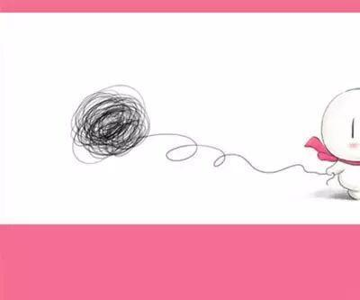

害怕么？期末考试啦.......
高中时，你曾经想做很多很多的事
带着无限憧憬，走进大学校园；
然而你发现，选对好专业，天天期末考......
临近期末，是时候开启学霸模式了

根据考试安排的时间、各个课程的难度以及自己掌握情况制定出合理的复习计划。哪科先复习、哪科后复习，早上复习什么、晚上复习什么等等；注意对于数学和某些专业课，是需要较长的复习时间的。像这种课一两天是突击不来的，要把这样的课，拉更长的战线，注意提前复习。
制定好复习计划后，就要合理安排好复习时间。学习之前把该吃的、该喝的、改拉的等等全部做完，手机尽量静音放在书包里，不要在学想习过程中银座各种各样的事情而打破自己的学习状态 。同时一定要保证自己的晚间睡眠时间和午休时间。
搜集复习资料
一是，注意老师划的重点与范围，这会是老师出题所占分数较大的部分；
二是，利用好学校考试的题库，没有题库的要利用好往届学生做过的试题；
三是，直系师兄师姐们之前的复习资料。
对大学中的图书馆的回忆往往是仅有复习周的抱佛脚。期末前人会比较多，起早去占座学习，重要的话说三遍，占座！占座！占座！图书馆安静的氛围，促进你的学（kun）习（yi）。培养考试之前的心态，保持良好的心态能发挥出最好的水平。
【小编默默的说一句：在图书馆就要锻炼你对学习的意志力啦。平时也应该常去图书馆看书，一定不要浪费了图书馆的资源】

CET4,6即将到来之际，小编预祝各位学长学姐金榜题名哦！

编辑：张婉娱
关注一下→
